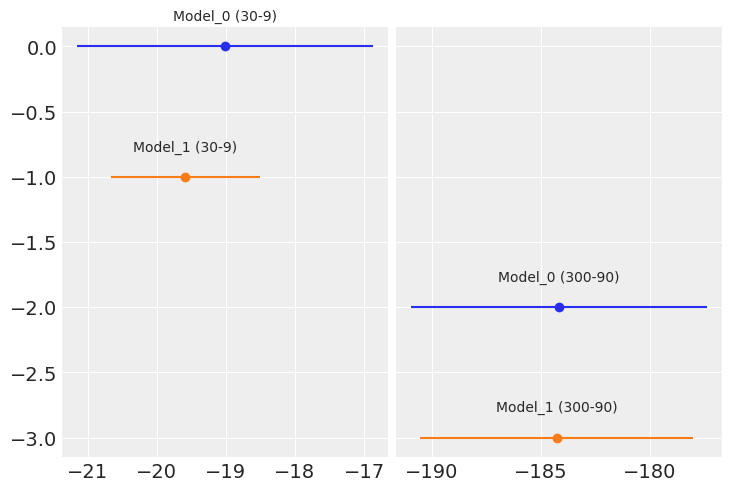

Chapter 5. Model Comparison¶
import os
import warnings
import arviz as az
import matplotlib.pyplot as plt
import pandas as pd
import seaborn as sns
import jax.numpy as jnp
from jax import random, vmap, local_device_count, pmap, lax, tree_map
from jax import nn as jnn
from jax.scipy import stats, special
import numpyro
import numpyro.distributions as dist
import numpyro.optim as optim
from numpyro.infer import MCMC, NUTS, HMC, Predictive
from numpyro.diagnostics import hpdi, print_summary
from numpyro.infer import Predictive, SVI, Trace_ELBO, init_to_value
from numpyro.infer.autoguide import AutoLaplaceApproximation
seed=1234
if "SVG" in os.environ:
%config InlineBackend.figure_formats = ["svg"]
warnings.formatwarning = lambda message, category, *args, **kwargs: "{}: {}\n".format(
category.__name__, message
)
az.style.use("arviz-darkgrid")
numpyro.set_platform("cpu") # or "gpu", "tpu" depending on system
numpyro.set_host_device_count(local_device_count())
# import pymc3 as pm
# import numpy as np
# import scipy.stats as stats
# import matplotlib.pyplot as plt
# import arviz as az
# az.style.use('arviz-darkgrid')
dummy_data = pd.read_csv('../data/dummy.csv', delimiter=' ', header=None, dtype=float)
x_1 = jnp.asarray(dummy_data)[:, 0]
y_1 = jnp.asarray(dummy_data)[:, 1]
order = 2
x_1p = jnp.vstack([x_1**i for i in range(1, order+1)])
x_1s = (x_1p - x_1p.mean(axis=1, keepdims=True)) / x_1p.std(axis=1, keepdims=True)
y_1s = (y_1 - y_1.mean()) / y_1.std()
plt.scatter(x_1s[0], y_1s)
plt.xlabel('x')
plt.ylabel('y')
Text(0, 0.5, 'y')
def model_l(obs=None):
α = numpyro.sample('α', dist.Normal(loc=0, scale=1))
β = numpyro.sample('β', dist.Normal(loc=0, scale=10))
ϵ = numpyro.sample('ϵ', dist.HalfNormal(scale=5))
μ = α + β * x_1s[0]
y_pred = numpyro.sample('y_pred', dist.Normal(loc=μ, scale=ϵ), obs=obs)
kernel = NUTS(model_l)
mcmc_l = MCMC(kernel, num_warmup=500, num_samples=2000, num_chains=2, chain_method='sequential')
mcmc_l.run(random.PRNGKey(seed), obs=y_1s)
def model_p(obs=None):
α = numpyro.sample('α', dist.Normal(loc=0, scale=1))
β = numpyro.sample('β', dist.Normal(loc=0, scale=10), sample_shape=(order,))
ϵ = numpyro.sample('ϵ', dist.HalfNormal(scale=5))
μ = α + jnp.dot(β, x_1s)
y_pred = numpyro.sample('y_pred', dist.Normal(loc=μ, scale=ϵ), obs=obs)
kernel = NUTS(model_p)
mcmc_p = MCMC(kernel, num_warmup=500, num_samples=2000, num_chains=2, chain_method='sequential')
mcmc_p.run(random.PRNGKey(seed), obs=y_1s)
sample: 100%|███████████████████████████| 2500/2500 [00:02<00:00, 915.45it/s, 3 steps of size 6.37e-01. acc. prob=0.95]
sample: 100%|██████████████████████████| 2500/2500 [00:00<00:00, 6931.30it/s, 3 steps of size 7.05e-01. acc. prob=0.93]
sample: 100%|██████████████████████████| 2500/2500 [00:02<00:00, 894.01it/s, 11 steps of size 2.61e-01. acc. prob=0.94]
sample: 100%|█████████████████████████| 2500/2500 [00:00<00:00, 6582.31it/s, 15 steps of size 2.86e-01. acc. prob=0.94]
x_new = jnp.linspace(x_1s[0].min(), x_1s[0].max(), 100)
α_l_post = mcmc_l.get_samples()['α'].mean()
β_l_post = mcmc_l.get_samples()['β'].mean(axis=0)
y_l_post = α_l_post + β_l_post * x_new
plt.plot(x_new, y_l_post, 'C1', label='linear model')
α_p_post = mcmc_p.get_samples()['α'].mean()
β_p_post = mcmc_p.get_samples()['β'].mean(axis=0)
idx = jnp.argsort(x_1s[0])
y_p_post = α_p_post + jnp.dot(β_p_post, x_1s)
plt.plot(x_1s[0][idx], y_p_post[idx], 'C2', label=f'model order {order}')
#α_p_post = trace_p['α'].mean()
#β_p_post = trace_p['β'].mean(axis=0)
#x_new_p = np.vstack([x_new**i for i in range(1, order+1)])
#y_p_post = α_p_post + np.dot(β_p_post, x_new_p)
plt.scatter(x_1s[0], y_1s, c='C0', marker='.')
plt.legend()
<matplotlib.legend.Legend at 0x135ca5790>

Posterior predictive checks¶
prior = Predictive(mcmc_l.sampler.model, num_samples=10)
prior_p = prior(random.PRNGKey(seed), obs=y_1s)
pred = Predictive(model=mcmc_l.sampler.model, posterior_samples=mcmc_l.get_samples(), return_sites=['y_pred'])
post_p = pred(random.PRNGKey(seed))
y_l = post_p['y_pred']
samples = az.from_numpyro(mcmc_l, posterior_predictive=post_p)
az.plot_ppc(samples, mean=True, observed=True, color='C0', alpha=0.01)
<AxesSubplot:xlabel='y_pred'>
prior = Predictive(mcmc_p.sampler.model, num_samples=10)
prior_p = prior(random.PRNGKey(seed), obs=y_1s)
pred = Predictive(model=mcmc_p.sampler.model, posterior_samples=mcmc_p.get_samples(), return_sites=['y_pred'])
post_p = pred(random.PRNGKey(seed))
y_p = post_p['y_pred']
samples = az.from_numpyro(mcmc_p, posterior_predictive=post_p)
az.plot_ppc(samples, mean=True, observed=True, color='C0', alpha=0.01)
<AxesSubplot:xlabel='y_pred'>
plt.figure(figsize=(8, 3))
data = [y_1s, y_l, y_p]
labels = ['data', 'linear model', 'order 2']
for i, d in enumerate(data):
mean = d.mean()
err = jnp.percentile(d, [25, 75])
plt.errorbar(mean, -i, xerr=[[-err[0]], [err[1]]], fmt='o')
plt.text(mean, -i+0.2, labels[i], ha='center', fontsize=14)
plt.ylim([-i-0.5, 0.5])
plt.yticks([])
([], [])
fig, ax = plt.subplots(1, 2, figsize=(10, 3), constrained_layout=True)
def iqr(x, a=0):
return jnp.subtract(*jnp.percentile(x, [75, 25], axis=a))
for idx, func in enumerate([jnp.mean, iqr]):
T_obs = func(y_1s)
ax[idx].axvline(T_obs, 0, 1, color='k', ls='--')
for d_sim, c in zip([y_l, y_p], ['C1', 'C2']):
T_sim = func(d_sim, 1)
p_value = jnp.mean(T_sim >= T_obs)
az.plot_kde(T_sim, plot_kwargs={'color': c}, label=f'p-value {p_value:.2f}', ax=ax[idx])
ax[idx].set_title(func.__name__)
ax[idx].set_yticks([])
ax[idx].legend()
Occam’s razor – simplicity and accuracy¶
x = jnp.array([4., 5., 6., 9., 12, 14.])
y = jnp.array([4.2, 6., 6., 9., 10, 10.])
plt.figure(figsize=(10, 5))
orders = [0, 1, 2, 5]
plt.plot(x, y, 'o')
for i in orders:
x_n = jnp.linspace(x.min(), x.max(), 100)
coeffs = jnp.polyfit(x, y, deg=i)
ffit = jnp.polyval(coeffs, x_n)
# p = onp.poly1d(coeffs)
yhat = jnp.polyval(coeffs, x)
# yhat = p(x)
ybar = jnp.mean(y)
ssreg = jnp.sum((yhat-ybar)**2)
sstot = jnp.sum((y - ybar)**2)
r2 = ssreg / sstot
plt.plot(x_n, ffit, label=f'order {i}, $R^2$= {r2:.2f}')
plt.legend(loc=2)
plt.xlabel('x')
plt.ylabel('y', rotation=0)
# plt.savefig('B11197_05_05.png', dpi=300)
plt.plot([10, 7], [9, 7], 'ks')
# plt.savefig('B11197_05_06.png', dpi=300)
[<matplotlib.lines.Line2D at 0x13bf93370>]
Computing information criteria with PyMC3¶
waic_l = az.waic(mcmc_l)
waic_l
Computed from 4000 by 33 log-likelihood matrix
Estimate SE
elpd_waic -14.38 2.67
p_waic 2.44 -
cmp_df = az.compare({'model_l':mcmc_l, 'model_p':mcmc_p},
method='BB-pseudo-BMA')
cmp_df
UserWarning: The default method used to estimate the weights for each model,has changed from BB-pseudo-BMA to stacking
| rank | loo | p_loo | d_loo | weight | se | dse | warning | loo_scale | |
|---|---|---|---|---|---|---|---|---|---|
| model_p | 0 | -4.579088 | 2.623271 | 0.000000 | 0.998345 | 2.625487 | 0.000000 | False | log |
| model_l | 1 | -14.409419 | 2.472847 | 9.830331 | 0.001655 | 2.363713 | 2.655246 | False | log |
az.plot_compare(cmp_df)
<AxesSubplot:xlabel='Log'>
Model Averaging¶
# TODO: figure out how to do this in numpyro
# w = 0.5
# y_lp = pm.sample_posterior_predictive_w([trace_l, trace_p],
# samples=1000,
# models=[model_l, model_p],
# weights=[w, 1-w])
# _, ax = plt.subplots(figsize=(10, 6))
# az.plot_kde(y_l, plot_kwargs={'color': 'C1'}, label='linear model', ax=ax)
# az.plot_kde(y_p, plot_kwargs={'color': 'C2'}, label='order 2 model', ax=ax)
# az.plot_kde(y_lp['y_pred'], plot_kwargs={'color': 'C3'},
# label='weighted model', ax=ax)
# plt.plot(y_1s, jnp.zeros_like(y_1s), '|', label='observed data')
# plt.yticks([])
# plt.legend()
# plt.savefig('B11197_05_09.png', dpi=300)
Bayes factors¶
coins = 30 # 300
heads = 9 # 90
y_d = jnp.repeat(jnp.array([0, 1]), jnp.array([coins-heads, heads]))
p = jnp.array([0.5, 0.5])
print(p)
model_index = dist.Categorical(probs=p).sample(key=random.PRNGKey(2), sample_shape=(10,))
m_0 = (4, 8)
m_1 = (8, 4)
checkeq = lax.eq(model_index, 0)
checkeq.astype(int)
print(checkeq.astype(int))
# m = lax.switch(checkeq, m_0, m_1)
[0.5 0.5]
[1 0 0 1 1 1 1 0 0 1]
# def model(obs=None):
# p = jnp.array([0.5, 0.5])
# model_index = numpyro.sample('model_index', dist.Categorical(probs=p))
# m_0 = (4, 8)
# m_1 = (8, 4)
# checkeq = lax.eq(model_index, 0).astype(int)
# m = lax.switch(checkeq, m_0, m_1)
# # m = pm.math.switch(pm.math.eq(model_index, 0), m_0, m_1)
# # a priori
# θ = numpyro.sample('θ', dist.Beta(concentration1=m[0], concentration0=m[1]))
# # likelihood
# y = numpyro.sample('y', dist.Bernoulli(probs=θ), obs=obs)
# kernel = NUTS(model)
# mcmc_BF = MCMC(kernel, num_warmup=500, num_samples=2000, num_chains=2, chain_method='sequential')
# mcmc_BF.run(random.PRNGKey(seed), obs=y_d)
# az.plot_trace(mcmc_BF)
# with pm.Model() as model_BF:
# p = np.array([0.5, 0.5])
# model_index = pm.Categorical('model_index', p=p)
# m_0 = (4, 8)
# m_1 = (8, 4)
# m = pm.math.switch(pm.math.eq(model_index, 0), m_0, m_1)
# # a priori
# θ = pm.Beta('θ', m[0], m[1])
# # likelihood
# y = pm.Bernoulli('y', θ, observed=y_d)
# trace_BF = pm.sample(5000)
# az.plot_trace(trace_BF)
# plt.savefig('B11197_05_11.png', dpi=300)
# pM1 = mcmc_BF.get_samples()['model_index'].mean()
# pM0 = 1 - pM1
# BF = (pM0 / pM1) * (p[1] / p[0])
# BF
def model_BF_0(obs=None):
θ = numpyro.sample('θ', dist.Beta(concentration1=4, concentration0=8))
y = numpyro.sample('y', dist.Bernoulli(probs=θ), obs=obs)
kernel = NUTS(model_BF_0)
mcmc_BF_0 = MCMC(kernel, num_warmup=500, num_samples=2000, num_chains=2, chain_method='sequential')
mcmc_BF_0.run(random.PRNGKey(seed), obs=y_d)
def model_BF_1(obs=None):
θ = numpyro.sample('θ', dist.Beta(concentration1=8, concentration0=4))
y = numpyro.sample('y', dist.Bernoulli(probs=θ), obs=obs)
kernel = NUTS(model_BF_1)
mcmc_BF_1 = MCMC(kernel, num_warmup=500, num_samples=2000, num_chains=2, chain_method='sequential')
mcmc_BF_1.run(random.PRNGKey(seed), obs=y_d)
sample: 100%|███████████████████████████| 2500/2500 [00:02<00:00, 915.99it/s, 3 steps of size 9.87e-01. acc. prob=0.94]
sample: 100%|██████████████████████████| 2500/2500 [00:00<00:00, 4046.24it/s, 1 steps of size 1.03e+00. acc. prob=0.93]
sample: 100%|███████████████████████████| 2500/2500 [00:02<00:00, 915.59it/s, 3 steps of size 9.37e-01. acc. prob=0.94]
sample: 100%|██████████████████████████| 2500/2500 [00:00<00:00, 4153.99it/s, 1 steps of size 1.13e+00. acc. prob=0.89]
# https://forum.pyro.ai/t/mcmc-and-marginal-likelihood/2025
# model_BF_0.marginal_likelihood / model_BF_1.marginal_likelihood
Bayes factors and information criteria¶
traces = []
waics = []
for coins, heads in [(30, 9), (300, 90)]:
y_d = jnp.repeat(jnp.array([0, 1]), jnp.array([coins-heads, heads]))
for priors in [(4, 8), (8, 4)]:
def model(obs=None): # with pm.Model() as model:
θ = numpyro.sample('θ', dist.Beta(*priors))
y = numpyro.sample('y', dist.Bernoulli(probs=θ), obs=obs)
# trace = pm.sample(2000)
kernel = NUTS(model)
trace = MCMC(kernel, num_warmup=500, num_samples=2000, num_chains=2, chain_method='sequential')
trace.run(random.PRNGKey(seed), obs=y_d)
traces.append(trace)
waics.append(az.waic(trace))
sample: 100%|███████████████████████████| 2500/2500 [00:02<00:00, 954.85it/s, 3 steps of size 9.87e-01. acc. prob=0.94]
sample: 100%|██████████████████████████| 2500/2500 [00:00<00:00, 7386.16it/s, 1 steps of size 1.03e+00. acc. prob=0.93]
sample: 100%|██████████████████████████| 2500/2500 [00:02<00:00, 1087.66it/s, 3 steps of size 9.37e-01. acc. prob=0.94]
sample: 100%|██████████████████████████| 2500/2500 [00:00<00:00, 7243.88it/s, 1 steps of size 1.13e+00. acc. prob=0.89]
sample: 100%|██████████████████████████| 2500/2500 [00:02<00:00, 1031.30it/s, 3 steps of size 9.27e-01. acc. prob=0.94]
sample: 100%|██████████████████████████| 2500/2500 [00:00<00:00, 6918.44it/s, 1 steps of size 1.32e+00. acc. prob=0.88]
sample: 100%|███████████████████████████| 2500/2500 [00:02<00:00, 964.63it/s, 3 steps of size 1.05e+00. acc. prob=0.94]
sample: 100%|██████████████████████████| 2500/2500 [00:00<00:00, 7002.64it/s, 3 steps of size 9.68e-01. acc. prob=0.92]
traces
[<numpyro.infer.mcmc.MCMC at 0x13bc96fa0>,
<numpyro.infer.mcmc.MCMC at 0x13c9900a0>,
<numpyro.infer.mcmc.MCMC at 0x13c3ea0a0>,
<numpyro.infer.mcmc.MCMC at 0x13cdf9580>]
model_names = ['Model_0 (30-9)', 'Model_1 (30-9)',
'Model_0 (300-90)', 'Model_1 (300-90)']
az.plot_forest(traces, model_names=model_names)
array([<AxesSubplot:title={'center':'94.0% HDI'}>], dtype=object)
waics
[Computed from 4000 by 30 log-likelihood matrix
Estimate SE
elpd_waic -19.01 2.14
p_waic 0.68 -,
Computed from 4000 by 30 log-likelihood matrix
Estimate SE
elpd_waic -19.59 1.08
p_waic 0.63 -,
Computed from 4000 by 300 log-likelihood matrix
Estimate SE
elpd_waic -184.16 6.80
p_waic 0.90 -,
Computed from 4000 by 300 log-likelihood matrix
Estimate SE
elpd_waic -184.26 6.26
p_waic 0.88 -]
fig, ax = plt.subplots(1, 2, sharey=True)
labels = model_names
indices = [0, 0, 1, 1]
for i, (ind, d) in enumerate(zip(indices, waics)):
mean = d.waic
ax[ind].errorbar(mean, -i, xerr=d.waic_se, fmt='o')
ax[ind].text(mean, -i+0.2, labels[i], ha='center')
# ax[0].set_xlim(30, 50)
# ax[1].set_xlim(330, 400)
# plt.ylim([-i-0.5, 0.5])
# plt.yticks([])
# plt.subplots_adjust(wspace=0.05)
# fig.text(0.5, 0, 'Deviance', ha='center', fontsize=14)

Regularizing priors¶
plt.figure(figsize=(8, 6))
x_values = jnp.linspace(-10, 10, 1000)
for df in [1, 2, 5, 15]:
# distri = stats.laplace(scale=df)
distri = dist.Laplace(scale=df)
x_pdf = jnp.exp(distri.log_prob(x_values))
plt.plot(x_values, x_pdf, label=f'b = {df}')
x_pdf = jnp.exp(dist.Normal().log_prob(x_values))
#stats.norm.pdf(x_values)
plt.plot(x_values, x_pdf, label='Gaussian')
plt.xlabel('x')
plt.yticks([])
plt.legend()
plt.xlim(-7, 7)
(-7.0, 7.0)
# x = range(0, 10)
x = jnp.arange(0, 10)
q = dist.Binomial(total_count=10, probs=0.75)
# r = random.randint(key=random.PRNGKey(0), shape=x, minval=0, maxval=10,)
r = dist.Uniform(low=0, high=10)
# data = stats.bernoulli.rvs(p=theta_real, size=trials)
# data = dist.Bernoulli(probs=theta_real).sample(random.PRNGKey(1), (trials,))
true_distribution = [list(q.sample(random.PRNGKey(i), (200,))).count(i) / 200 for i in x]
q_pmf = jnp.exp(q.log_prob(x))
r_pmf = jnp.exp(r.log_prob(x))
_, ax = plt.subplots(1, 3, figsize=(12, 4), sharey=True,
constrained_layout=True)
for idx, (dist, label) in enumerate(zip([true_distribution, q_pmf, r_pmf], ['true_distribution', 'q', 'r'])):
h = -jnp.sum(jnp.array(dist) * jnp.log(jnp.array(dist))) # Entropy
ax[idx].vlines(x, 0, dist, label=f'entropy = {h:.2f}')
ax[idx].set_title(label)
ax[idx].set_xticks(x)
ax[idx].legend(loc=2, handlelength=0)
# import numpy as np
# np.random.seed(912)
# x = range(0, 10)
# q = scipy.stats.binom(10, 0.75)
# r = scipy.stats.randint(0, 10)
# true_distribution = [list(q.rvs(200)).count(i) / 200 for i in x]
# q_pmf = q.pmf(x)
# r_pmf = r.pmf(x)
# _, ax = plt.subplots(1, 3, figsize=(12, 4), sharey=True,
# constrained_layout=True)
# for idx, (distri, label) in enumerate(zip([true_distribution, q_pmf, r_pmf], ['true_distribution', 'q', 'r'])):
# ax[idx].vlines(x, 0, dist, label=f'entropy = {scipy.stats.entropy(dist):.2f}')
# print("X", dist)
# print("XX", type(dist))
# ax[idx].set_title(label)
# ax[idx].set_xticks(x)
# ax[idx].legend(loc=2, handlelength=0)
# plt.savefig('B11197_05_15.png', dpi=300)
# If qk is not None, then compute the Kullback-Leibler divergence S = sum(pk * log(pk / qk), axis=axis).
# H = -jnp.sum(jnp.array(dist) * jnp.log(jnp.array(dist))) # Entropy
def KLD(pk, qk, base=None, axis=0):
if base is not None and base <= 0:
raise ValueError("`base` must be a positive number or `None`.")
pk = jnp.asarray(pk)
pk = 1.0*pk / jnp.sum(pk, axis=axis, keepdims=True)
if qk is None:
vec = special.entr(pk)
else:
qk = jnp.asarray(qk)
pk, qk = jnp.broadcast_arrays(pk, qk)
qk = 1.0*qk / jnp.sum(qk, axis=axis, keepdims=True)
vec = scipy.special.rel_entr(pk, qk)
S = jnp.sum(vec, axis=axis)
if base is not None:
S /= jnp.log(base)
return S
KLD(q_pmf, r_pmf)
DeviceArray(0.71549076, dtype=float32)
import scipy
scipy.stats.entropy(true_distribution, q_pmf), scipy.stats.entropy(true_distribution, r_pmf)
(0.0074029481416101415, 0.7618786232356769)
scipy.stats.entropy(r_pmf, q_pmf), scipy.stats.entropy(q_pmf, r_pmf)
(2.7569299, 0.71549076)